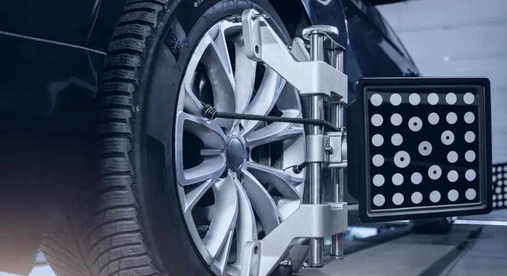

La alineación 3D es el sistema más moderno y preciso para corregir los ángulos de dirección y suspensión de un vehículo. A diferencia de los métodos tradicionales por láser o digitales con cabezales, las alineadoras 3D utilizan cámaras de alta resolución y objetivos con patrones reflectivos para ofrecer una medición rápida, sin contacto y extremadamente precisa.
En este artículo te contamos cuáles son los pasos que se siguen en un proceso de alineación con tecnología 3D.
🔹 Paso 1: Colocación del vehículo en el elevador
El vehículo debe posicionarse correctamente sobre el elevador alineador (de tijera o de 4 columnas). Es importante que esté centrado y nivelado, ya que una mala posición puede alterar las mediciones.
🔹 Paso 2: Instalación de objetivos 3D en las ruedas
A diferencia de los cabezales electrónicos tradicionales, en este sistema se colocan objetivos pasivos (targets) en las llantas. Estos no tienen cables, sensores ni baterías.
Son simplemente paneles con un patrón visual que las cámaras de la alineadora pueden leer.
🔹 Paso 3: Compensación por rodamiento
Con los objetivos instalados, el software solicitará que se haga rodar el vehículo ligeramente hacia adelante y hacia atrás (o se gire cada rueda si la alineadora lo permite con el elevador elevado).
Esto permite que el sistema compense automáticamente cualquier desviación en la posición de las ruedas o irregularidades leves en la superficie.
🔹 Paso 4: Medición de ángulos
Una vez completada la compensación, las cámaras 3D capturan en tiempo real los ángulos principales:
- Convergencia (toe)
- Caída (camber)
- Ángulo de avance (caster)
- Ángulo de empuje (thrust angle)
- Diferencia de batalla y otros parámetros según el vehículo
El software compara estas mediciones con los datos del fabricante del vehículo.
🔹 Paso 5: Comparación con la base de datos
La alineadora muestra en pantalla una comparación visual con los valores de referencia del modelo, facilitando la detección de cualquier desajuste o desalineación.
⚠️ Por eso es clave que la base de datos esté actualizada: si los valores están desactualizados, podés estar alineando mal aunque las mediciones sean precisas. Leer más sobre actualizaciones.
🔹 Paso 6: Ajustes sobre el vehículo
Con los datos a la vista, el técnico realiza los ajustes necesarios en:
- Barra de dirección
- Suspensión delantera o trasera (según si hay ajustes posibles)
- Subchasis, en casos donde es necesario corregir ángulos de empuje
Mientras se realizan los ajustes, la alineadora 3D actualiza los valores en tiempo real, lo que permite visualizar al instante cómo afectan los movimientos realizados.
🔹 Paso 7: Verificación final y reporte
Una vez finalizados los ajustes, se realiza una verificación general. Si todo está dentro de los valores permitidos por el fabricante, el sistema genera un informe detallado para entregar al cliente, que incluye:
- Estado inicial
- Estado final
- Observaciones (si hubo alguna irregularidad)
Este reporte es fundamental para generar confianza y transparencia en el servicio.
✅ Ventajas de la alineación 3D
- 🔹 Mayor precisión. Gracias a la tecnología de cámaras y objetivos sin contacto.
- 🔹 Medición más rápida. Se evitan pasos manuales complejos.
- 🔹 Reporte profesional para el cliente. Mejora la percepción del taller.
- 🔹 Menor riesgo de errores. Especialmente si se usa con bases de datos actualizadas.
📍 Trivium Center: tecnología de alineación de última generación
En Trivium Center trabajamos exclusivamente con alineadoras Hofmann 3D, líderes en Europa y Argentina. Además de vender el equipo, ofrecemos:
- Instalación profesional
- Capacitación técnica
- Servicio postventa
- Actualización de software y base de datos
¿Querés sumar una alineadora 3D a tu taller?
Escribinos por WhatsApp y te ayudamos a elegir el equipo ideal para tu negocio.
💬 Consultar por WhatsApp